Kanmaki, Nara: things to do, food and stays
Kanmaki · Nara
Kanmaki
Highlighted on the Nara map.

Stay
No bookable places to stay found in Kanmaki — nearest options in Kashiba.
Dining
鉄板ステーキ 花心
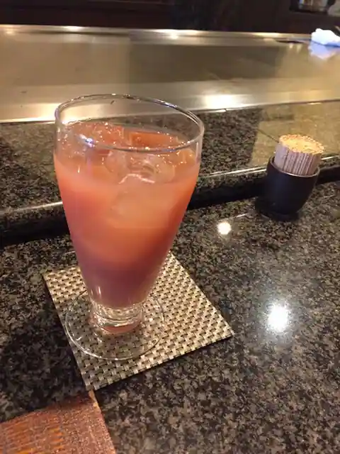
Teppan Steak Kashin
饂飩 梵蔵
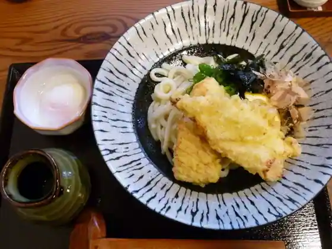
Udon Bon Kura
まほろば珈琲 ささゆり台店
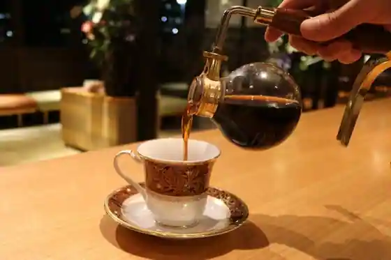
Mahoroba Coffee Sasayuri Dai
ジンギスカン 俺の家
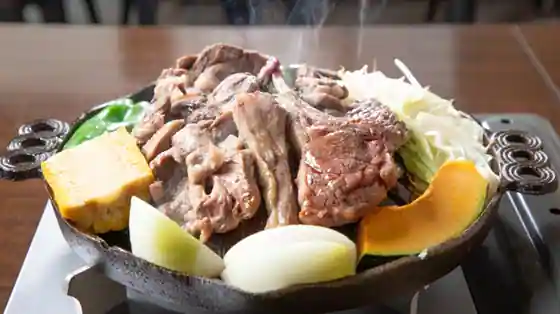
Jingisukan Ore No Ie
中華料理 ターボー
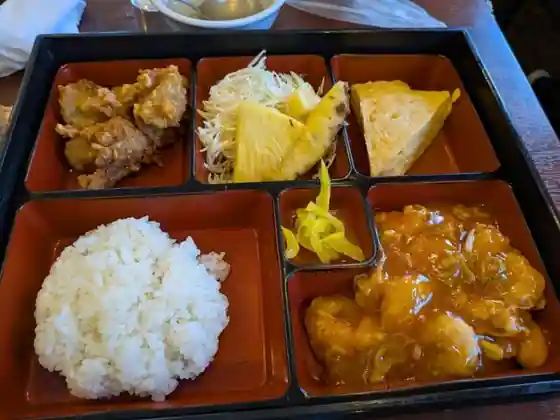
Chukaryori Tabo
オムライスのお店 Ｆｕ～Ｆｕ～
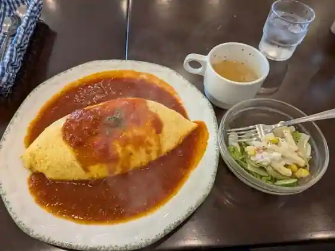
Omuraisu No Fu~Fu~
京都特製ラーメン 旭
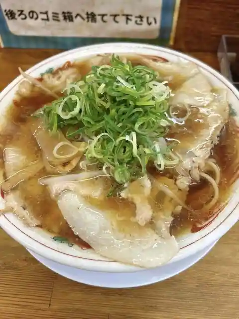
Kyoto Tokusei Ramen Asahi
陽だまりカフェ
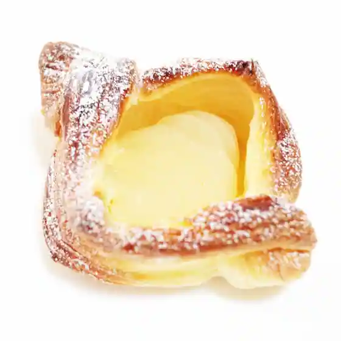
Yo Damari Cafe
中華料理 いっせい風味
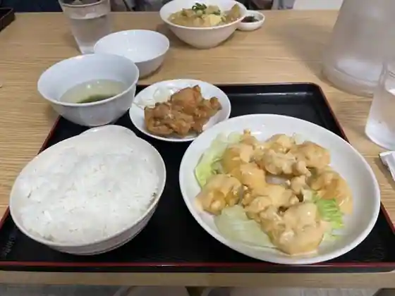
Chukaryori Issei Fumi
串処 岳
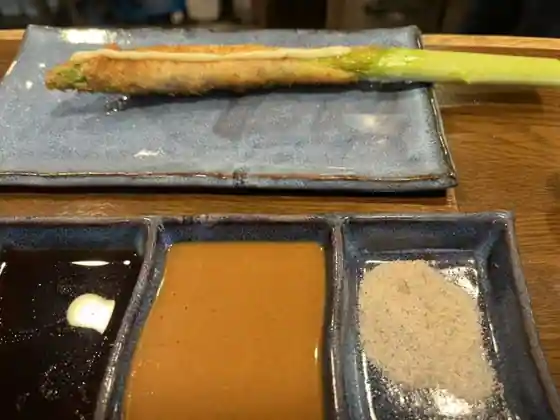
Kushi Tokoro Gaku
春乃
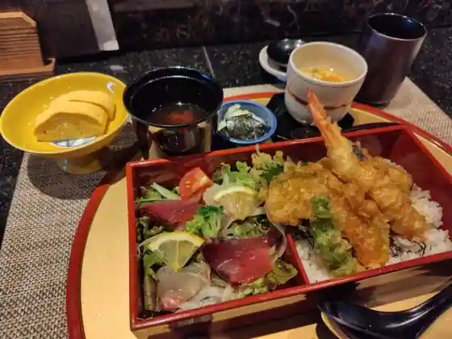
Haruno
サフラン
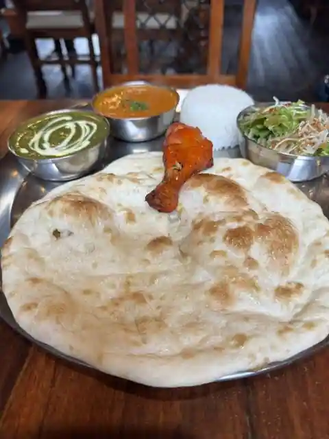
Safuran
手作りパン工房 麦
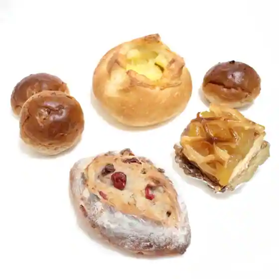
Tezukuri Bakery Kobo Mugi
お食事カフェ Sogno
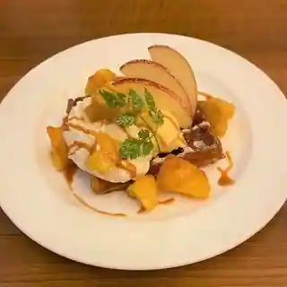
O Shokuji Cafe Sogno
鰻 うな福
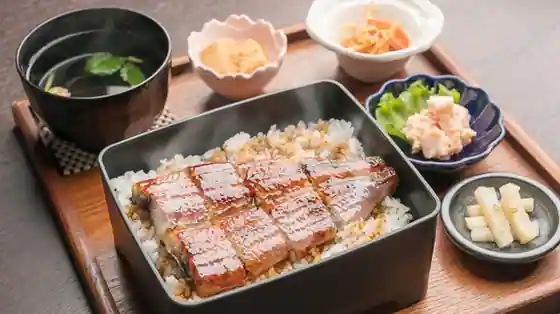
Unagi Una Fuku
最上、
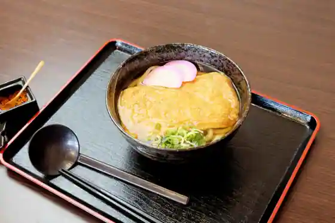
Saijo,
キイロ
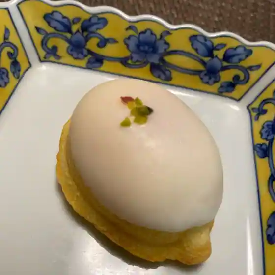
Kiro
華きゃべつ 上牧本店
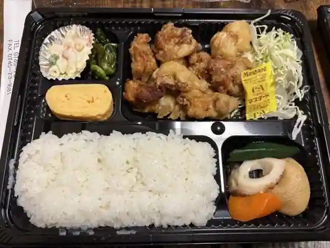
Hana Kyabetsu Kanmaki Hon
グラーノグラーノ 西大和店
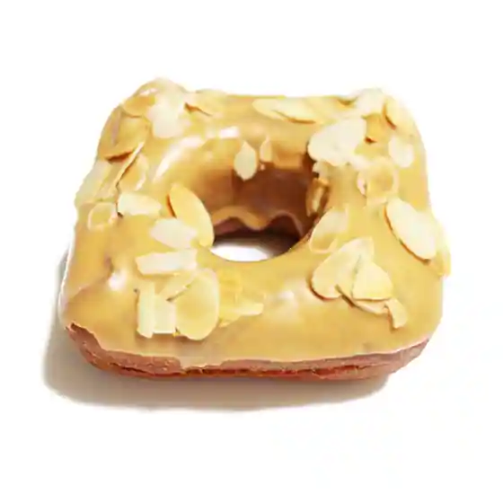
Guranogurano Nishi Yamato
草村サイト
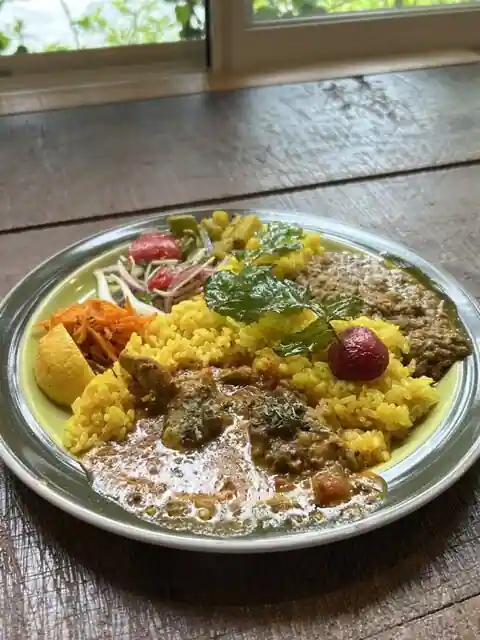
Kusamura Saito
パクパク ディオ上牧店
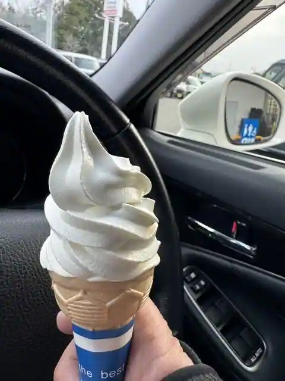
Pakupaku Dio Kanmaki
SASAYURI KITCHEN
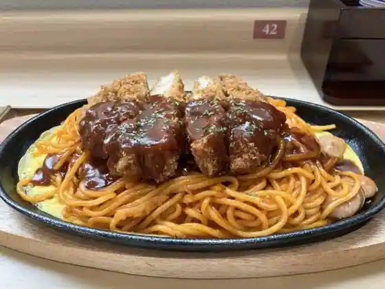
SASAYURI KITCHEN
TENTER
TENTER
バードバード
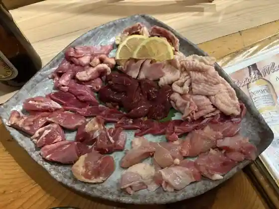
Badobado
Sights
Izanagi Shrine
Kasuga Shrine (Kanmaki)

Satoru Sho Shrine

Jo An Tera

Kataoka Castle Ruins

Kifune Shrine